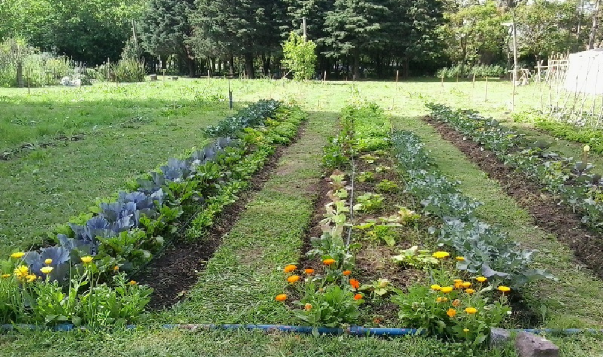
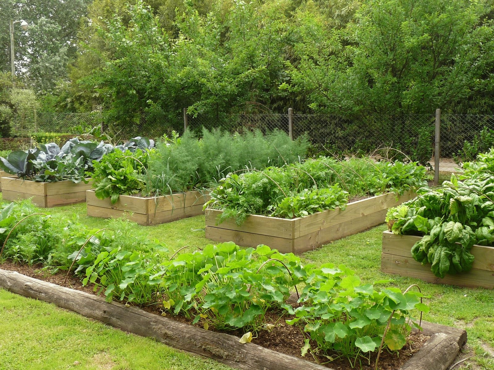
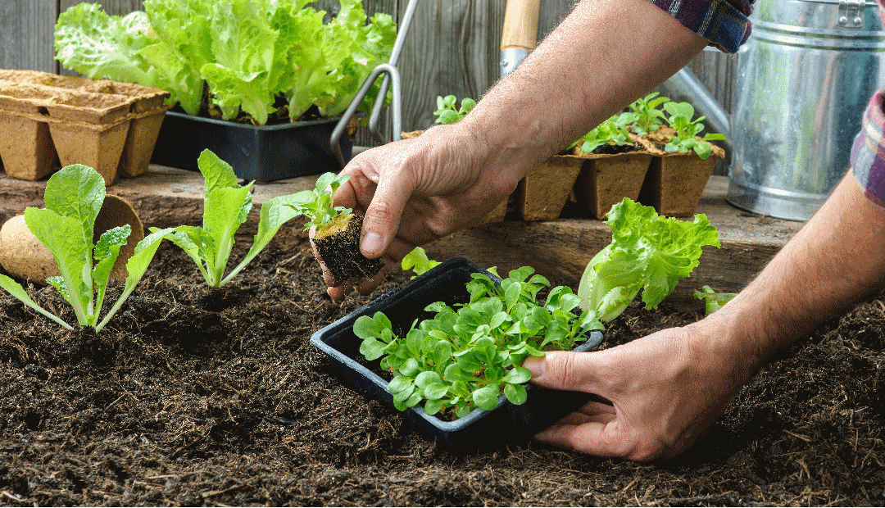
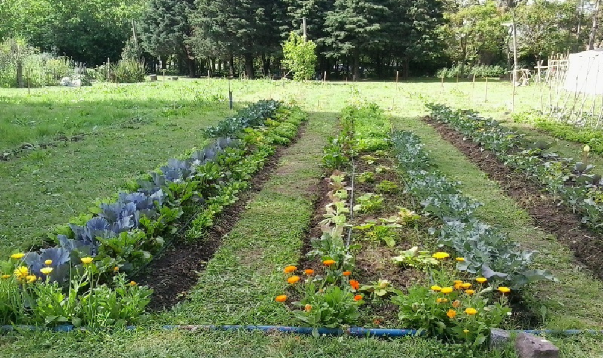
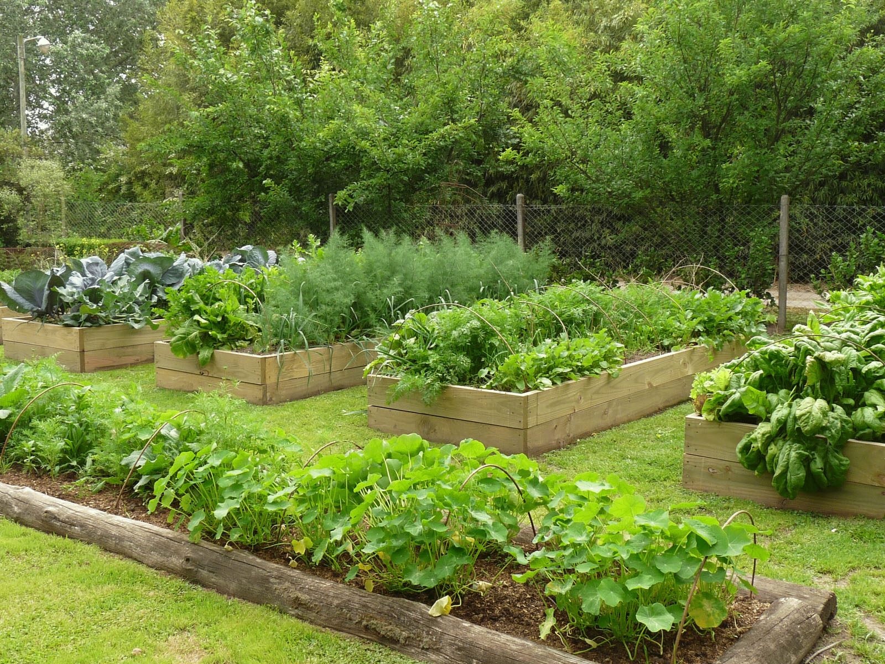
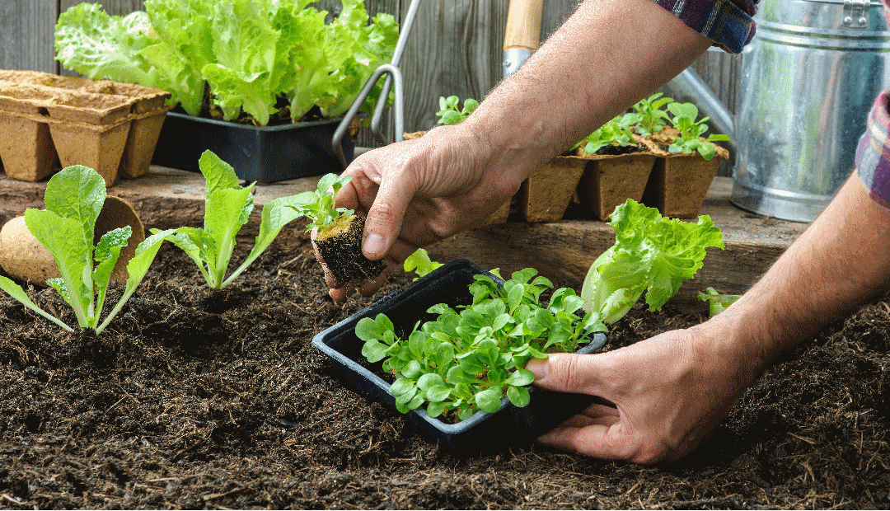

¡Bienvenido a tu Asistente de Huerta Urbana! 🌱
Esta herramienta está diseñada para ayudarte a organizar y gestionar todas las tareas de tu huerta, desde la siembra hasta la cosecha. Mantén un registro claro, planifica tus actividades y ¡nunca más olvides cuándo regar tus plantas!
Registra Tareas Fácilmente
Anota nuevas tareas como siembras, riegos, fertilizaciones y más, con detalles y fechas.
Visualiza tu Lista
Consulta todas tus tareas pendientes, fíltralas por categoría y ordénalas por fecha.
Planifica con el Calendario
Observa tus tareas distribuidas en el mes y filtra por tipo para una mejor organización.
Personaliza la Apariencia
Elige entre un tema claro o oscuro para una experiencia visual a tu gusto.
¿Cómo Empezar?
- Usa el botón Registrar Tarea en la navegación (o el enlace rápido de abajo) para añadir tu primera tarea.
- Completa los detalles: nombre de la planta o actividad, categoría y fecha. ¡No olvides los comentarios si necesitas notas extra!
- Explora la Lista de Tareas para ver todo lo que has registrado.
- Visita el Calendario para una vista mensual de tus actividades.
- Haz clic en el icono / en la esquina superior derecha para cambiar el tema.
¡Esperamos que esta herramienta te sea de gran utilidad para cultivar tu propia huerta urbana!